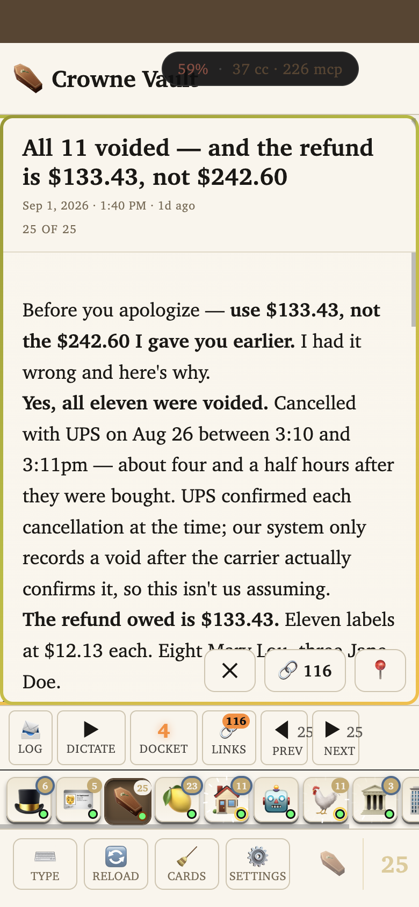

Four quick taps to confirm nothing you use broke. Your place is saved automatically — close this and come back on any device.
What changed: the old repos-and-branches screen is gone, along with four leftover test screens. Everything you actually use — the presenter, the guest pages, your status page, the sign-in rescue screens — is untouched. The old address now sends you to the presenter instead of a dead page.
Test it
✓
Open the old addressIt should land you on the presenter — your normal card view — not an error page.Open the old address
✓
Check the presenter still worksCards show up, your steward icons are along the bottom, and sending still works. Here's what it looks like right now on a phone:

✓
Tap the "Web" button in your phone appIn the presenter, open Settings and tap "Switch to web view." It used to land on the screen I deleted. Now it opens the presenter in your browser instead. No app update needed — it just works.
✓
Check your status pageIt still works, and its broken "Remote" button — which pointed at a screen deleted before I started — is gone.Open the status page
What I checked so you don't have to: all 101 behind-the-scenes services still answer, the guest pages Jory and <> use still load, the sign-in rescue screens still work, and sending a card through the presenter still goes through. I also found and fixed a mistake of my own along the way — my first version of the redirect pointed at a page that didn't exist, which I caught by actually opening it rather than trusting the code.